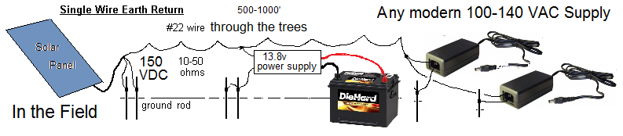
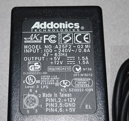
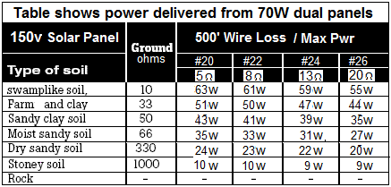

Bob Bruninga, WB4APR
Use one panel at 72-100 VDC for 40W: This is the general idea of this Camp-Solar initiative. One panel is more than enough to provide plenty of
solar charging for camp lanterns and other 12v devices. We have found that most 100-240V DC/DC and laptop power supplies (such as the one shown here) work just fine down to the 70-100 VDC output of these panels. But the 70-100 VDC is not something that kids should be playing with. For kids, first downconvert to 48v DC first.
Two panels for DAYTIME energy such as Ham Radio events: If you must have more power for
daytime events using lots of realtime power or needing to run over a thousand feet, then wire two
panels in series as shown on this page. The 140v peak-power point should work well with ANY DC/DC or laptop power supply (such as the one shown here) But again, 140-200 VDC can be quite a jolt and should only be used by
adults with full appreciation of the risks. Wire 3 panels in series for 210-300 VDC on the wire, using the same power supply and deliver 120W over #24 wire over thousands of feet with minimal loss (only 500 mA on the wire)...
High Voltage Summary: These High Voltage options work much better since operating at 140 or 210 VDC instead of 48 VDC reduces the wire and ground loses 10-to-1 o remore since loses are proportional to current squared. And the current is less than 500 mA. The problem of course is handling the High Voltage wire can be quite a shock. But if done right, the combined total of 2 or 3 solar panels might be able to deliver as much as 60 watts to 100 Watts to the remote location depending on ground conductivity as shown in the table below.

Universal Power Supply Operation: Not just this 15v 3A supply for battery charging at camp, but
almost any modern electronic system that uses a universal 100-240 VAC power supply including LED and CFL bulbs can run directly off the HV wire. The reason is that these supplies use DC/DC conversion internally to efficiently do the power conversion without the need for heavy transformers or variable voltage taps for peration in different countries. By making modern electronics operate on the wide 100-240 VAC range, then a single power supply and a single qualification test can qualify the device for worldwide distribution.

You might notice that these suppies always specify 100-240 VAC 47-60 Hz and never mention DC or 0 Hz. This is because there are no DC national distribution systems used by consumers and so there is no reason for the manufacturer to pay for a very expensive DC test and certification for something that is never used that way. But anything that does not have a very heavy 60 Hz transfomer, then by definition, must first rectify the AC voltage to DC, then use switching power supply technology to convert to the actual DC voltage used in the device.
Switches and DC! Another very IMPORTANT thing to notice is that these supplies rarely have an ON/OFF switch. The reason is that if you open a switch under load carrying any DC current the switch will completely arc over and continue to carry current until the switch and everything around it catches ON FIRE. So do not use any device, even if it will run fine on HV DC if it has a switch, because all it takes is one time to turn-OFF the switch, and it is toast, possibly along with anything nearby!
USB Power and the Camping Integration Challenge: The challenge in using this higher power system in camp is that there is so little equipment (other than lots of lights and ham radio communications equipment) that is really needed when one is trying to enjoy the wilderness experience and the ability to just plug in almost any modern electronic device is just too tempting to avoid.
By looking around it is easy to find lots of things to power from 150 VDC power supplies.
Here is
a multi-USB box with its own switching power supply to provide six one amp USB sockets (3 on the front and 2 on the back).

Lower Line Loss at 150 VDC: As noted on the previous page, the ground return only works well with low resistance in moist earth with low resistance (10 ohms to 66 ohms in moist soils) which is most of what we have back East. As we go higher in voltage, (triple the 48v camp example) the current is 1/3rd and when squared, results in a ten fold reduction in loss. The table at right shows this significant difference delivering on the order of 50 Watts from the 70W panels over significant distances.
Camp Lighting: If the goal is only to provide a single modest garden solar lamp per cabin then a single panel could probably power dozens of cabins. For Scout troop use, one panel could also provide all the bright nighttime lighting needs of a scout troop campsite. But if you want to really light up an out door venue with several 120v LED or CFL lamps, then this system will do it (though you will have to add a battery, and then standard DC to 120 VAC inverter to use the lamps at night.
Take a look at the rating on most LED screw-in bulbs for the home. You will see many of them are stamped as 100-240VAC just like any other universal electronic item. These bright 40, 60 and 100W equivalent bulbs only draw 9, 11 or 22 Watts and will work just fine on this system.
Bob Bruninga, WB4APR,
Use at your own risk!
US Naval Academy
lastname @ usna dot edu
US Naval Academy
lastname @ usna dot edu
{kind=link}